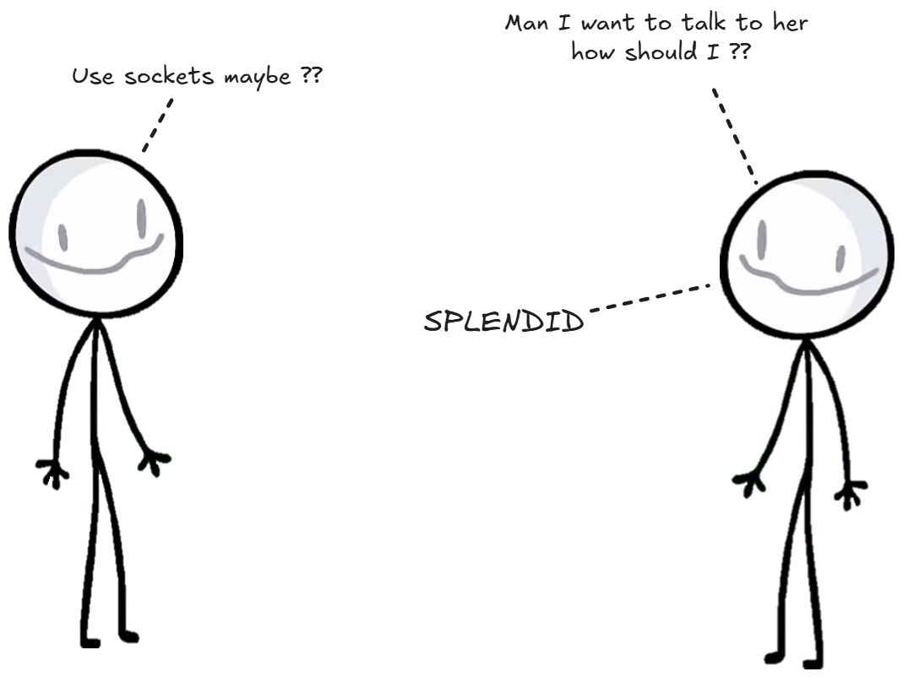
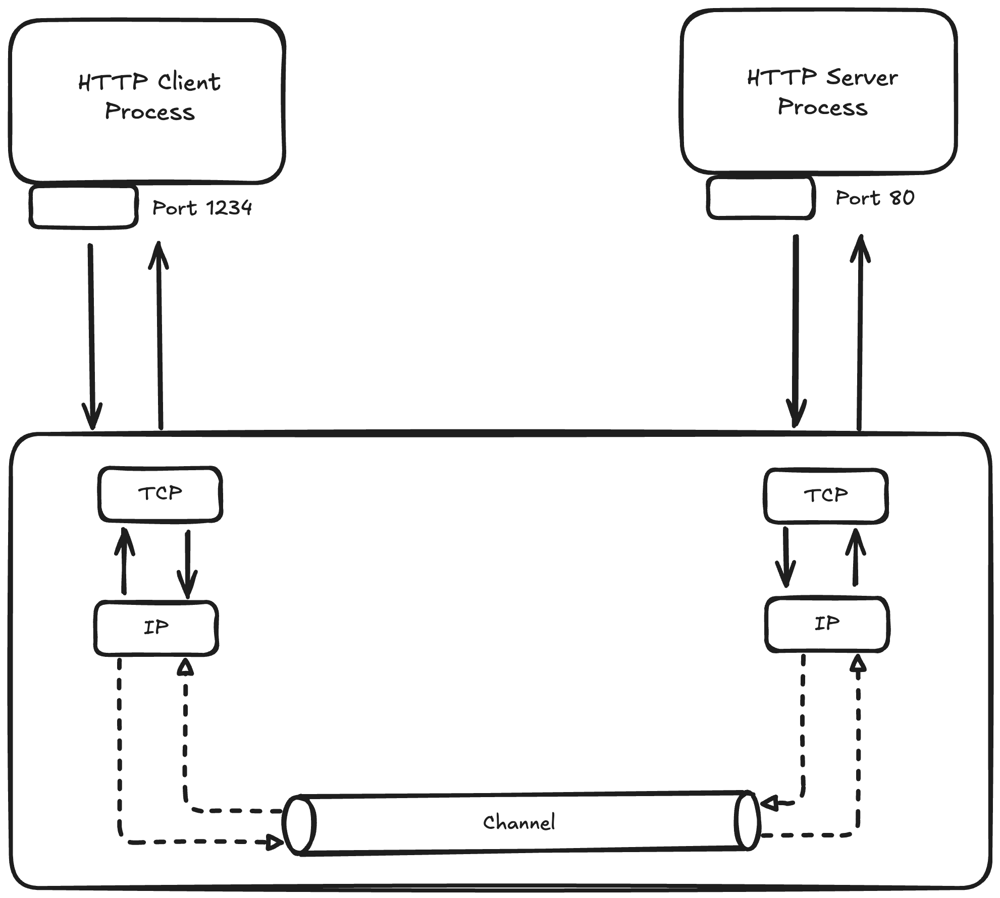
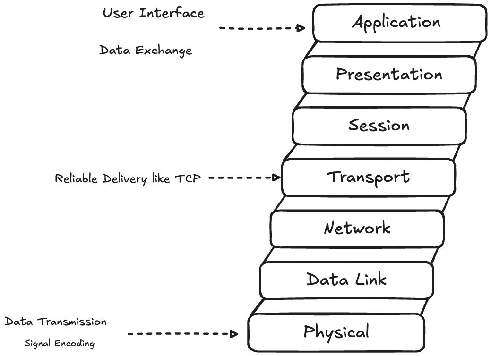
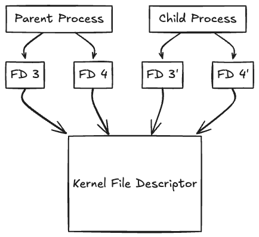
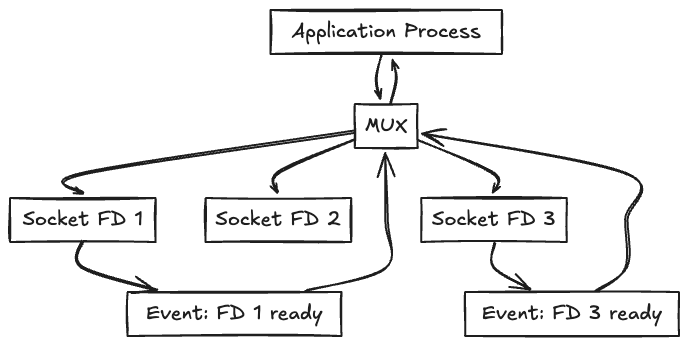

When your web browser fetches this blog post, when your messaging app sends a text, or when you stream a video, there's a fundamental mechanism at work, we call it SOCKETS
Sockets are the endpoints of communication channels that allow processes to exchange data, whether they're on the same machine or across the globe. At its core, a socket is an abstraction provided by the operating system that represents one endpoint of a bidirectional communication link. The socket API, originally developed for Unix systems, has become the standard interface for network programming across virtually.
Socket operate at different layers of the network stack. TCP sockets provide reliable, ordered data delivery with error detection and correction. UDP sockets offer faster, connection less communication without delivery guarantees
The socket abstraction hides the complexity of network protocols, hardware interface and routing decisions. When you create a socket, the operating systems allocates kernel data structures, assigns network resources, and manages the connection lifecycle. This abstraction enables developers to focus on application logic rather than low-level network details.
But how do processes on the same machine communicate without going through the network stack at all ??
An anonymous pipe is a unidirectional communication channel that exists only in memory. Unlike named pipes (FIFOs), anonymous pipes have no filesystem representation and can only be shared between related processes, typically a parent and its child processes
The kernel implements anonymous pipes using a circular buffer, typically 64KB on Linux systems. This buffer acts as a temporary storage area between the writing and reading processes. When the buffer fills up, writers are blocked until readers consume data, providing natural flow control.
#include <"stdio.h">
#include <"unistd.h">
#include <"stdio.h">
int main() {
int pipefd[2];
pid_t pid;
// creating a pipe
if (pipe(pipefd) == -1) {
perror("pipe");
return 1;
}
pid = fork();
if (pid == 0) {
// child process - writer
close(pipefd[0]); // Close read end
write(pipefd[1], "Hello from child", 16);
close(pipefd[1]);
} else {
//parent process - reader
char buffer[20];
close(pipefd[1]); // Close write end
read(pipefd[0], buffer, 16);
printf("Received: %s\n", buffer);
close(pipefd[0]);
}
return 0;
}
The pipe() system call creates two file descriptors: pipefd[0] for reading and pipefd[1] for writing. The kernel maintains a circular buffer (typically 64KB on Linux) between these endpoints. When the buffer fills up, writers block until readers consume data.
The creation of anonymous pipes involves the operating system allocating two file descriptors: one for reading and one for writing. These descriptors can be inherited by child processes through fork(), enabling parent-child communication. The pipe exists as long as at least one process holds either descriptor open.
Unlike network sockets, pipes operate entirely within kernel memory, making them extremely fast for local communication. There's no network protocol overhead, no packet serialization, and no routing decisions just direct memory-to-memory data transfer managed by the kernel.
But what exactly are these file descriptors that pipes return, and how does the operating system manage them?
File descriptors are the answer to our previous question about how the OS manages communication endpoints. A file descriptor (fd) is a non-negative integer that serves as an abstract handle for accessing files, sockets, pipes, devices, and other I/O resources in Unix-like systems.
The operating system maintains a file descriptor table for each process, mapping fd numbers to kernel data structures that contain the actual details about the resource. This indirection allows the kernel to manage resources centrally while providing processes with simple integer handles.
#include <"sys/socket.h">
#include <"netinet/in.h">
#include <"unistd.h">
int main() {
// Creating different types of file descriptors
// 1. Socket file descriptor
int sockfd = socket(AF_INET, SOCK_STREAM, 0);
printf("Socket fd: %d\n", sockfd);
// 2. File descriptor for regular file
int filefd = open("/tmp/test.txt", O_CREAT | O_RDWR, 0644);
printf("File fd: %d\n", filefd);
// 3. Pipe file descriptors
int pipefd[2];
pipe(pipefd);
printf("Pipe read fd: %d, write fd: %d\n", pipefd[0], pipefd[1]);
// All can be used with same I/O operations
char buffer[100];
read(sockfd, buffer, 100); // Read from socket
read(filefd, buffer, 100); // Read from file
read(pipefd[0], buffer, 100); // Read from pipe
close(sockfd);
close(filefd);
close(pipefd[0]);
close(pipefd[1]);
return 0;
}
Whether we are dealing with network socket, a regular file, or a pipe, you use the same system calls : read(), write(), close(), and others. This abstraction is what makes Unix-like systems so powerful for system programming.
File descriptors are process-specific resources. When a process forks, the child inherits copies of the parent's file descriptors, but subsequent operations on these descriptors in either process don't affect the other. However, both processes share the same underlying kernel file description, so operations like changing file position affect both processes.
The kernel enforces limits on file descriptors to prevent resource exhaustion. Each process has both soft and hard limits on the maximum number of open file descriptors. These limits can typically be viewed and modified using system utilities, and they're crucial for server applications that handle many concurrent connections.
But how do we efficiently monitor multiple file descriptors for activity without constantly polling them?
I/O multiplexing solves the challenge of monitoring multiple file descriptors simultaneously. Instead of creating separate threads for each connection or constantly polling each descriptor, multiplexing allows a single thread to wait for activity on multiple file descriptors at once.
The fundamental problem that I/O multiplexing addresses is the blocking nature of I/O operations. When a process calls read() on a socket with no available data, the process blocks until data arrives. For a server handling multiple clients, this means either dedicating one thread per connection or missing data from other connections.
I/O multiplexing enables a single process to efficiently handle multiple input/output sources, such as sockets, without blocking on each one individually. The application process communicates with an I/O multiplexer (e.g., select, poll, or epoll), requesting it to monitor a set of file descriptors (FDs) in this case, three socket FDs. The multiplexer continuously checks the status of these FDs and blocks the process until one or more of them become "ready" (e.g., data is available to read). When an event occurs on a monitored FD (like FD 1 or FD 3 becoming readable), the multiplexer returns control to the process with information about which FDs are ready.
The process can then perform non-blocking I/O only on those specific descriptors. This mechanism allows efficient use of system resources by avoiding the need to spawn multiple threads or processes for each I/O source.
#include <"sys/epoll.h">
int epoll_fd = epoll_create1(0);
struct epoll_event event, events[MAX_EVENTS];
// Add socket to epoll
event.events = EPOLLIN;
event.data.fd = socket_fd;
epoll_ctl(epoll_fd, EPOLL_CTL_ADD, socket_fd, &event);
// Wait for events
int num_events = epoll_wait(epoll_fd, events, MAX_EVENTS, -1);
I/O multiplexing enables servers to handle thousands of concurrent connections with a single thread, but what about connections that are meant to be temporary and don't need to persist?
Ephemeral ports provide the answer to temporary connections. When a client application creates an outbound connection, it doesn't typically specify a source port. Instead, the operating system automatically assigns an ephemeral (temporary) port from a predefined range.
The ephemeral port range varies by operating system. Linux typically uses ports 32768-60999, while Windows uses 1024-65535. These ranges are configurable and represent a balance between providing enough ports for concurrent connections while reserving lower-numbered ports for well-known services.
#include <"sys/socket.h">
#include <"netinet/in.h">
#include <"arpa/inet.h">
int main() {
int sockfd = socket(AF_INET, SOCK_STREAM, 0);
struct sockaddr_in server_addr, local_addr;
socklen_t addr_len = sizeof(local_addr);
// Connect to server (OS assigns ephemeral port automatically)
server_addr.sin_family = AF_INET;
server_addr.sin_port = htons(80);
inet_pton(AF_INET, "93.184.216.34", &server_addr.sin_addr); // example.com
connect(sockfd, (struct sockaddr*)&server_addr, sizeof(server_addr));
// Check what ephemeral port was assigned
getsockname(sockfd, (struct sockaddr*)&local_addr, &addr_len);
printf("Local port assigned: %d\n", ntohs(local_addr.sin_port));
close(sockfd);
return 0;
}
Ephemeral port allocation strategies differ across operating systems. Some use sequential allocation, starting from the lowest available port in the range. Others use random or hash-based algorithms to distribute ports more evenly across the range. The choice affects performance, security, and the ability to handle high connection rates.
The lifecycle of an ephemeral port begins when a client initiates an outbound connection. The operating system selects an available port, binds it to the socket, and uses it as the source port for the connection. When the connection closes, the port enters a TIME_WAIT state before becoming available for reuse.
TCP (Transmission Control Protocol) state machine, which outlines the various states a TCP connection transitions through during its lifecycle.
TIME_WAIT is a crucial TCP state that prevents delayed packets from a closed connection from interfering with new connections using the same port pair. The typical TIME_WAIT duration is twice the Maximum Segment Lifetime (MSL), often 60-120 seconds. This can become a limiting factor for applications making many short-lived connections.
Port exhaustion occurs when all ephemeral ports are in use or in TIME_WAIT state. This is a common problem for high-traffic proxy servers or applications making many outbound connections. Solutions include using multiple IP addresses, tuning TIME_WAIT parameters, or implementing connection pooling.
What about scenarios where we need to implement custom protocols or handle raw network data?
Raw sockets provide direct access to network protocols below the transport layer, allowing applications to craft custom packets or implement protocols not directly supported by the operating system.
Operating systems typically provide TCP and UDP socket abstractions that handle most application needs. However, some applications require lower-level access to implement custom protocols, perform network analysis, or bypass standard protocol limitations.
#include <"sys/socket.h">
#include <"netinet/ip.h">
#include <"netinet/tcp.h">
#include <"arpa/inet.h">
// Creating a raw socket (requires root privileges)
int create_raw_socket() {
int sockfd = socket(AF_INET, SOCK_RAW, IPPROTO_TCP);
if (sockfd < 0) {
perror("raw socket creation failed");
return -1;
}
// Tell kernel not to add IP header (we'll craft it ourselves)
int one = 1;
if (setsockopt(sockfd, IPPROTO_IP, IP_HDRINCL, &one, sizeof(one)) < 0) {
perror("setsockopt IP_HDRINCL failed");
return -1;
}
return sockfd;
}
// Craft a custom TCP packet
void craft_tcp_packet(char *packet, const char *src_ip, const char *dst_ip,
uint16_t src_port, uint16_t dst_port) {
struct iphdr *ip_header = (struct iphdr *)packet;
struct tcphdr *tcp_header = (struct tcphdr *)(packet + sizeof(struct iphdr));
// Fill IP header
ip_header->version = 4;
ip_header->ihl = 5;
ip_header->tos = 0;
ip_header->tot_len = htons(sizeof(struct iphdr) + sizeof(struct tcphdr));
ip_header->id = htons(12345);
ip_header->frag_off = 0;
ip_header->ttl = 64;
ip_header->protocol = IPPROTO_TCP;
ip_header->check = 0; // Kernel will calculate
inet_pton(AF_INET, src_ip, &ip_header->saddr);
inet_pton(AF_INET, dst_ip, &ip_header->daddr);
// Fill TCP header
tcp_header->source = htons(src_port);
tcp_header->dest = htons(dst_port);
tcp_header->seq = htonl(1000);
tcp_header->ack_seq = 0;
tcp_header->doff = 5;
tcp_header->syn = 1; // SYN flag
tcp_header->window = htons(65535);
tcp_header->check = 0; // Calculate separately
tcp_header->urg_ptr = 0;
}
Raw sockets operate at the IP level or even lower, depending on the socket type and options. Applications using raw sockets must manually construct protocol headers and handle details normally managed by the operating system, such as checksums, fragmentation, and addressing.
Buffer management significantly impacts socket performance. The bandwidth-delay product determines optimal buffer sizes - the product of network bandwidth and round-trip time indicates how much data should be "in flight" for maximum throughput. Undersized buffers limit throughput, while oversized buffers waste memory.
Connection reuse and pooling strategies reduce the overhead of connection establishment and teardown. HTTP/1.1 introduced persistent connections to avoid repeated TCP handshakes. HTTP/2 multiplexes multiple streams over single connections. Connection pools maintain ready-to-use connections to frequently accessed servers.
typedef struct {
int *sockets;
int count;
int capacity;
pthread_mutex_t mutex;
} connection_pool_t;
int get_connection(connection_pool_t *pool, const char *host, int port) {
pthread_mutex_lock(&pool->mutex);
if (pool->count > 0) {
// Reuse existing connection
int sockfd = pool->sockets[--pool->count];
pthread_mutex_unlock(&pool->mutex);
return sockfd;
}
pthread_mutex_unlock(&pool->mutex);
// Create new connection
return create_connection(host, port);
}
void return_connection(connection_pool_t *pool, int sockfd) {
pthread_mutex_lock(&pool->mutex);
if (pool->count < pool->capacity) {
pool->sockets[pool->count++] = sockfd;
} else {
close(sockfd); // Pool full, close connection
}
pthread_mutex_unlock(&pool->mutex);
}
Memory mapping can improve performance for applications that repeatedly access the same data. By mapping files into memory, applications can avoid system call overhead and benefit from the operating system's virtual memory management.
Zero-copy operations eliminate unnecessary data copying between user and kernel space. Techniques like sendfile() allow the kernel to transfer data directly from files to sockets without involving user-space buffers. This approach significantly improves performance for file serving applications.
Network programming is ultimately about enabling communication between processes, whether they're on the same machine or across the globe. Hope I was able to add value to your today's learning :)
#include
// Use sendfile() for efficient file transfers
ssize_t send_file_efficient(int out_fd, int in_fd, off_t offset, size_t count) {
return sendfile(out_fd, in_fd, &offset, count);
}
// Use splice() for pipe-to-socket transfers (Linux)
ssize_t splice_data(int fd_in, int fd_out, size_t len) {
int pipefd[2];
pipe(pipefd);
// Move data from input to pipe
ssize_t bytes_in = splice(fd_in, NULL, pipefd[1], NULL, len, SPLICE_F_MOVE);
// Move data from pipe to output
ssize_t bytes_out = splice(pipefd[0], NULL, fd_out, NULL, bytes_in, SPLICE_F_MOVE);
close(pipefd[0]);
close(pipefd[1]);
return bytes_out;
}